4
Device Abutment
This chapter describes the Virtuoso® Layout Suite XL layout editor’s (Layout XL) abutment capability.
This chapter discusses the following topics.
- Requirements for Abutment in Layout XL
- Setting Up Pcells for Abutment
- Manual Device Abutment
- Automatic Device Abutment
- Debugging Abutment
- Abutment of Dummy Shapes in Pcells
- Abutment Function Flow
Abutment allows cells to be automatically overlapped, aligned, and electrically connected without introducing a design rule violation or connectivity error. Abutment reduces both the area occupied by a circuit and the length of the interconnect wiring. You can use abutment during interactive layout generation.
Mirroring and Pin Permutation During Abutment
If an attempt to abut two devices causes two pins on the same net to touch, a short violation is created. Layout XL tries to resolve this violation automatically by first mirroring the device or chain in question. If that fails, it then attempts to resolve it by permuting pins.
This behavior is controlled by two environment variables, both of which are switched on by default.
-
autoMirror
which specifies that if a short violation is created during abutment, then Layout XL first mirrors the device in question in order to resolve the short. Only if this is unsuccessful does Layout XL attempt to resolve the short by permuting the pins.
The GUI equivalent is the Mirror transistors option on the Layout XL Generation Options form.
Automatic mirroring is temporarily disabled when constraint-aware editing is on and constraints exist between the instances and chains under consideration. -
autoMirrorChains
which specifies that device chains are mirrored subject to certain conditions being satisfied. This environment variable is honored only ifauto Mirroris set tot. It has no GUI equivalent.
To disable the mirroring of devices and chains:
- From the layout window menu bar, choose Options – Layout XL and click the Generation tab.
-
Switch off the Mirror transistors option and click OK.
This switches off both device mirroring and chain mirroring during abutment.
Resolving shorts by mirroring rather than permuting pins is desirable because pin permutation
- Assumes that the device is symmetric and therefore the source and drain parameters are not swapped
- Changes the connectivity of the design.
Resolving the short violation through mirroring removes these drawbacks.
Requirements for Abutment in Layout XL
Abutment in Layout XL is triggered when two pins of different instances overlap or when named shapes within two Pcell instance submasters overlap. If they meet the following criteria, the abutment engine executes.
- The abutment engine is enabled.
-
Both instances must be Pcells set up for abutment or cells with the appropriate abutment properties set.
For more information, see “Setting Up Pcells for Abutment”. -
Both instances must share the same master or must have the abutClass
property set.
If two instances have the same master, then they can be abutted, even if theabutClassis set to different values on each instances.
To abut two cells with different masters, you must add theabutClassproperty to the pin of each cell and enter the same abutment class name as the value for each property.
For more information, see About Pcell Super and Submaster Cells in the Virtuoso Layout Suite SKILL Reference. - The instances must overlap.
-
Both instance pins must be connected to the same net.To abut overlapping instances with no nets, set the abutWithoutConnectivity environment variable.
- Both instance pins must be defined on shapes of the same layer or on layers that are defined as equivalent layers in the technology file.
-
Both instance pins can have the same abutment direction if the rotation of one (but not both) of the pins is either
R180orMY, or any other rotation that transforms the left-hand side to the right-hand side. -
During placement, the Connectivity extractor and Abut transistors options in the Connectivity form must be turned on.
When the Abut transistors option is turned on, devices that have not been abutted but are overlapping are abutted. If the devices are already abutted, autoAbutment does not re-abut the devices. - If one of the instances is in any type of group (including a synchronous clone), the other instance must be in the same group.
Abutted devices can share diffusion, contacts, metal tabs, or any shape combined in an instance pin.
Setting Up Pcells for Abutment
To set up a Pcell so that it can be abutted, add the following properties on the pins of the cellview:
You can also add these properties to a cellview in order to set up abutment for all the pins in the cellview. If any pin in the cellview has properties that differ from the properties set for the cellview, the properties on the pin override the properties on the cellview.
For examples of how to set abutment properties, see the sample Pcell libraries at
-
your_install_dir
/tools/dfII/samples/ROD/rodPcells/components/mos/mos.il -
your_install_dir
/tools/dfII/samples/ROD/rodPcells/components/mos/sample_mos.il
Steps in Automatic Abutment
-
Layout XL recognizes that two Pcell instances can be abutted together, triggered either by overlapping two instance pins or when you create parameterized cell instances during chaining and folding.
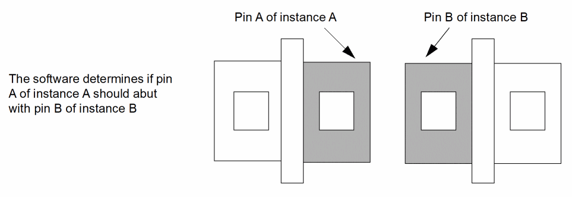 - Automatic abutment identifies cells for abutment by master name or class.
-
Auto-abutment calls
abutFunction, a user-defined SKILL function that performs the necessary changes to the parameterized cell instances themselves.
You must provide the SKILL function because Layout XL has no knowledge of the user-defined parameterized cell.
abutFunctionadjusts the parameters of Pcells and calculates reference edge offsets of conventional cells. It stores the old values, which can be called again if you choose to unabut the instances.
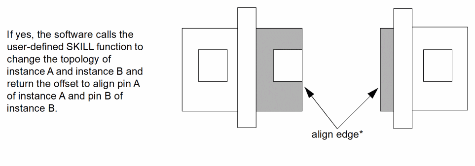 -
If the cells can be abutted (the abutment connection condition is 1 or 2), the cells are abutted to the reference edges and the pins are aligned perpendicular to the direction of abutment.
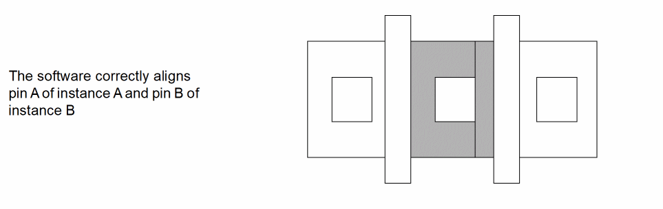The align edge is always the real outermost edge used, as shown in the figure below. This lets you maintain an L-shaped pin when applying abutment.
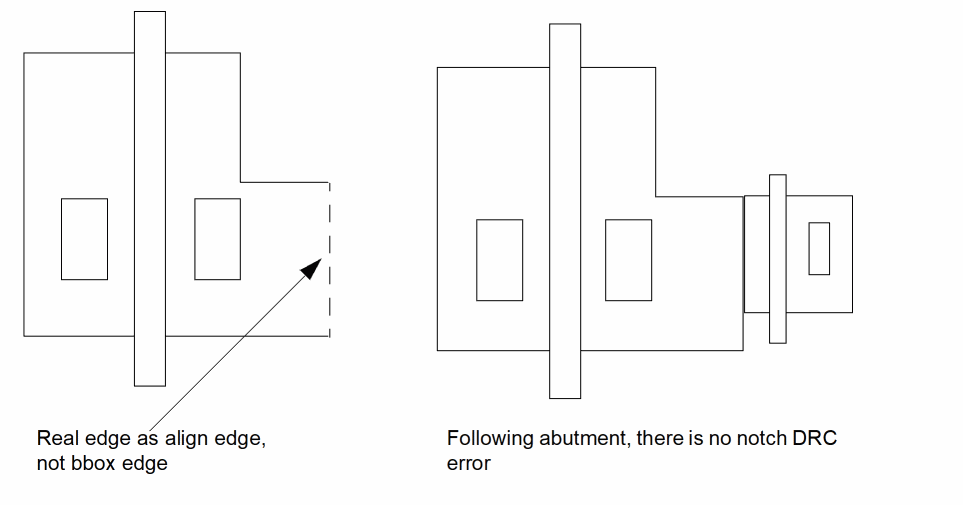If the cells cannot be abutted, the abutment connection condition is 3 and the cells remain in their original configuration.
For information on abutment connection conditions, see abutFunction.
Sample Parameterized Cells Set Up for Abutment
Example 1
This example shows what each of the different parts does:
----------------------------------------------------------------------
; Function: abutFunction(iA iB pA pB pASide connection event
; @optional (group nil))
;
; Inputs: group - the abutment group that these two cells belong to.
; ______________________________________________________________________
;
; iA = Instance Id of cell that will move during abutment
; ______________________________________________________________________
;
; iB = Instance Id of cell being abutted to
; ______________________________________________________________________
;
; pA = Overlapping Pin Fig of iA
; ______________________________________________________________________
;
; pB = Overlapping Pin Fig of iB
; ______________________________________________________________________
;
; pASide = Abutting pin access direction
; ______________________________________________________________________
;
connection = an integer value of 1 or 2 that indicates:
;
; 1. pins are connected to the same net and do not
; connect to any other pin.
;
; 2. pins are connected to the same net and the net
; connects to other pins
; ______________________________________________________________________
;
; event = integer that represents abutment event:
;
; 1. compute abutment offset
; 2. Pcell parameter adjustment for abutment
; 3. Pcell parameter adjustment for unabutment
; ______________________________________________________________________
;
; group = abutment group pointer available to specific events:
; abutment group pointer available to Events 1, 2, and 3
; ______________________________________________________________________
; ; Outputs: depends ; ; Side effects: ; procedure( abutFunction(iA iB pA pB pASide connection event @optional (group nil)) prog((result) case(event (1 ; Compute offset result = getAbutmentOffset(iA iB pA pB pASide connection) ) (2 ; Adjust Pcell parameters result = setAbutmentParams(iA iB pA pB pASide connection group) ) (3 ; Adjust Pcell parameters back to default resetAbutmentParams(group iA iB) result = t ) (t ; Anything else return a nil
result = nil
)
)
return(result)
)
)
Example 2
This example shows how to add abutment properties to pins in an inverter Pcell.
; *** the following 4 pins are on metal1 and are on ***
; *** the power and ground rails. This will allow ***
; *** abutment to other standard cells ***
obj = leftVddPin~>dbId
dbReplaceProp(obj "abutAccessDir" "list" list("left"))
dbReplaceProp(obj "abutClass" "string" "stdcell")
dbReplaceProp(obj "abutFunction" "string" "stdCellFunc")
; *** the following property is a technique for passing ***
; *** information to the user defined function. In this ***
; *** case the minimum cell height is dependent on many ***
; *** factors including design rules and is originally ***
; *** calculated in the Pcell code. This avoids ***
; *** duplicating calculations in the user-defined ***
; *** function ***
dbReplaceProp(obj "minCellHeight" "float" minH)
obj = rightVddPin~>dbId
dbReplaceProp(obj "abutAccessDir" "list" list("right"))
dbReplaceProp(obj "abutClass" "string" "stdcell")
dbReplaceProp(obj "abutFunction" "string" "stdCellFunc")
dbReplaceProp(obj "minCellHeight" "float" minH)
obj = leftGndPin~>dbId
dbReplaceProp(obj "abutAccessDir" "list" list("left"))
dbReplaceProp(obj "abutClass" "string" "stdcell")
dbReplaceProp(obj "abutFunction" "string" "stdCellFunc")
dbReplaceProp(obj "minCellHeight" "float" minH)
obj = rightGndPin~>dbId
dbReplaceProp(obj "abutAccessDir" "list" list("right"))
dbReplaceProp(obj "abutClass" "string" "stdcell")
dbReplaceProp(obj "abutFunction" "string" "stdCellFunc")
dbReplaceProp(obj "minCellHeight" "float" minH)
; *** The following 4 pins are the diffusion pins ***
; *** of the individual MOS devices in the inverter ***
; *** this will allow abutment of other individual ***
; *** MOS devices to the inverter ***
obj = POutPin~>dbId
dbReplaceProp(obj "abutAccessDir" "list" list("right"))
dbReplaceProp(obj "abutClass" "string" "ptran")
dbReplaceProp(obj "abutFunction" "string" "mosAbutFunc")
dbReplaceProp(obj "contactParam" "string" "POutCnts")
dbReplaceProp(obj "w" "float" pw)
; *** the automatic spacing properties are used if abutment fails ***
dbReplaceProp(obj "vxlInstSpacingDir" "list" list("right"))
dbReplaceProp(obj "vxlInstSpacingRule" "float" .35 )
obj = NOutPin~>dbId
dbReplaceProp(obj "abutAccessDir" "list" list("right"))
dbReplaceProp(obj "abutClass" "string" "ntran")
dbReplaceProp(obj "abutFunction" "string" "mosAbutFunc")
dbReplaceProp(obj "contactParam" "string" "NOutCnts")
dbReplaceProp(obj "w" "float" nw)
dbReplaceProp(obj "vxlInstSpacingDir" "list" list("right"))
dbReplaceProp(obj "vxlInstSpacingRule" "float" .35 )
obj = PPwrPin~>dbId
dbReplaceProp(obj "abutAccessDir" "list" list("left"))
dbReplaceProp(obj "abutClass" "string" "ptran")
dbReplaceProp(obj "abutFunction" "string" "mosAbutFunc")
dbReplaceProp(obj "contactParam" "string" "PPwrCnts")
dbReplaceProp(obj "w" "float" pw)
dbReplaceProp(obj "vxlInstSpacingDir" "list" list("left"))
dbReplaceProp(obj "vxlInstSpacingRule" "float" .35 )
obj = NPwrPin~>dbId
dbReplaceProp(obj "abutAccessDir" "list" list("left"))
dbReplaceProp(obj "abutClass" "string" "ntran")
dbReplaceProp(obj "abutFunction" "string" "mosAbutFunc")
dbReplaceProp(obj "contactParam" "string" "NPwrCnts")
dbReplaceProp(obj "w" "float" nw)
dbReplaceProp(obj "vxlInstSpacingDir" "list" list("left"))
dbReplaceProp(obj "vxlInstSpacingRule" "float" .35 )
Calls to dbReplaceProp for Abutment Groups
When using the function dbReplaceProp, you must call dbReplaceProp for abutment groups before calls to dbReplaceProp for Pcell properties because the IDs of the objects before and after abutment occurs cannot be guaranteed to be the same. This is because the instance master is purged as soon as the instance reference count associated with the instance master becomes zero. Therefore you cannot rely on the same data or IDs after Pcell re-evaluation.
Pin Figure Names must be Unique within a Terminal
When developing transistor Pcells, wherever there is more than one figure attached to any oaPin (as is the case when two figures are strongly connected), each figure attached to the pin must have a name that is unique within the same terminal and its corresponding must-connect terminals. If this is not the case, use the dbSetPinFigName SKILL function to assign a unique name to each figure attached to the pin.
Abutting Pcell Supermasters from Legacy Designs
If a Pcell supermaster that is instantiated in a legacy design has changed, possibly due to a PDK update since the design was last opened in a newer version of Virtuoso, the Pcell submaster might appear to have incorrect contacts. To resolve the contact mismatch and to allow abutment, open the design in Layout XL, discard the edits, and re-read the design from disk.
Creating CMOS Pcells to Use with Abutment
To create Pcells that have a built-in abutment capability,
-
Create a Pcell specifically for abutment.
Editing an existing Pcell for abutment is much more difficult than creating a new one for the purpose. For information on creating Pcells, see the Virtuoso Parameterized Cell Reference. -
Add the following abutment parameters to the Pcell.
-
Conditional inclusion or exclusion of contacts. For more information, see abutCondInclusion
.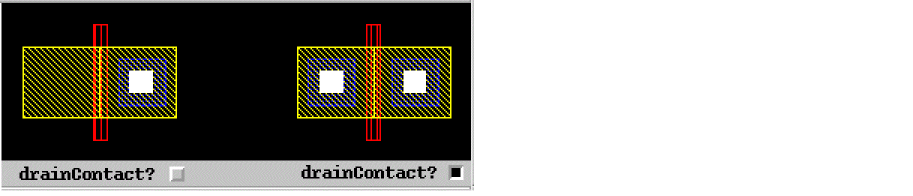 -
Gate pin identification. For more information, see abutGateNet
.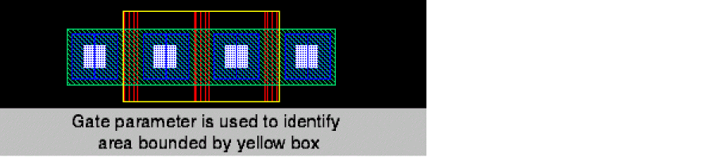 -
Access direction identification. For information, see abutAccessDir
.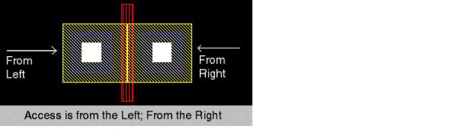 -
Specify stretchable material. For information, see abutStretchMat
.
The first element in theabutStretchMatlist isdrainStretch.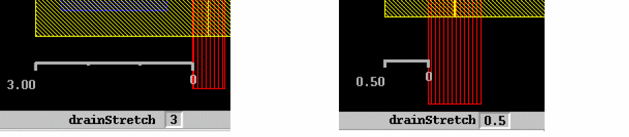The second element in theabutStretchMatlist isabutMinExt.The third element in the
abutStretchMatlist isabutRule1Ext.The fourth element in the
abutStretchMatlist isabutRule2Ext.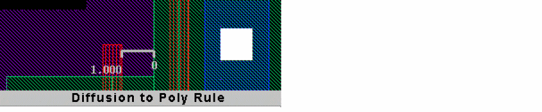The fifth element in theabutStretchMatlist isabutContactExt.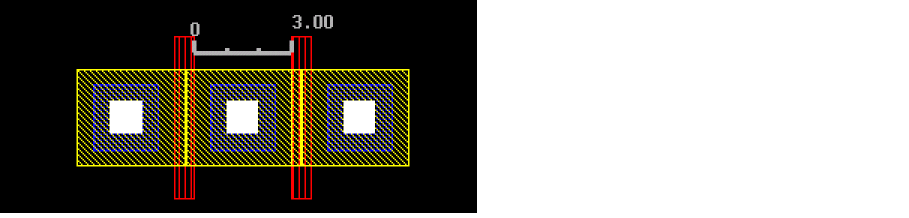
-
Conditional inclusion or exclusion of contacts. For more information, see abutCondInclusion
Abutting MOS Devices without a User-Defined Function
Another way to process abutment and unabutment without creating an abutFunction callback, is to use the abutMosStretchMat property. The abutMosStretchMat property is used with the automatic abutment properties to define abutment; for more information, see .
This section describes the automatic abutment properties that you will have to add to Pcells to use auto-abutment on standard MOS Pcells without having to define your own abutFunction.
Adding Automatic Abutment Properties
As well as creating specific parameters in the Pcells and named diffusion shape pins, you also have to add the following properties on the shapes the pins are created on. The auto-abutment properties specify whether or not the Pcells can abut.
-
abutClass
– Pins with the sameabutClassare able to abut. -
abutAccessDir
– Defines the directions in which the pins are able to abut. -
abutGateNet
– Defines the name of the net the gate shapes are on. -
abutCondInclusion
– Defines the name of the boolean property that adds or removes contact shapes over the diffusion pin.
Abutting Multiple Pins
Layout XL supports the abutment of more than one pin to a wider single pin.
Multiple pins on the edge of a cell can also be abutted. Any pair of pins with the correct properties can trigger automatic abutment, but once automatic abutment has been triggered, other pins on that edge that touch pins on the cell it is abutted to will not trigger automatic abutment again. If those pins do not connect, auto-permute tries to resolve the conflict. If the conflict cannot be resolved, a connection violation is flagged.
Snapping Instances in the Direction Perpendicular to the Abutment
The layout environment variable abutPerpSnapOn controls whether Layout XL snaps an instance in the direction perpendicular to the abutment. When abutPerpSnapOn is set to t, Layout XL automatically snaps the moving instance vertically such that the lower-left y coordinates of the two abutting pins are the same.
Additional Pins on Ignored Instances
The abutment engine ignores instance terminals belonging to instances with the schematic properties lvsIgnore or ignore. This means that additional pins on ignored instances are also ignored, allowing abutment to take place where it otherwise would not and enabling a tighter placement of abutted components.
For example, a schematic has two MOS devices connected in series (one’s source to the other’s drain). The schematic also places a parasitic capacitor between these MOS devices. The capacitor has the ignore property attached to it. When generating the layout, Layout XL correctly ignores the capacitor and its pin, and abuts the two MOS devices.
Manual Device Abutment
Device abutment is the process by which a number of MOS transistors (or the individual folds of folded transistors) are chained in a specific order. Chaining devices helps reduce layout area and capacitance.
Prerequisites
- Need not be bound to a schematic instance.
- Must be properly set up for abutment. For more information, see Setting Up Pcells for Abutment.
-
Must have the
lxComponentTypeproperty set on the cell or library to which they belong. You set this property using the Edit Component Types command. For more information, see the Configure Physical Hierarchy command’s Component Types Mode.
All parameter values are retained after chaining. The chaining engine always creates pairs of P and N chains with the P chain on top (because the power rail is typically at the top of a cell) and the N chain at the bottom (because the ground rail is typically at the bottom).
You can use the following commands to chain devices manually.
- Generate Chained Devices lets you chain devices interactively while you are editing a layout. See Chaining Devices Interactively.
- The Chain command in the instance context menu lets you chain devices selectively while you are editing a layout. See Chaining Devices Using the Context Menu.
- Generate Selected From Source can automatically chain devices while generating a layout. See Chaining Devices when Generating Selected From Source.
-
Move lets you control chaining while moving devices. See Moving Chained Transistors.The results generated by the chaining engine are affected by the setting for the lxStackPartitionParameters environment variable. The Generate Chained Devices command considers the first parameter of this environment variable only if there are 100 instances or more in the selected set. Generate Selected From Source always considers both parameters.
Chaining Devices Interactively
To chain transistors interactively while you are editing a layout:
-
From the layout window menu bar, choose Connectivity – Generate – Chained Devices.
The Generate Chained Devices form appears.
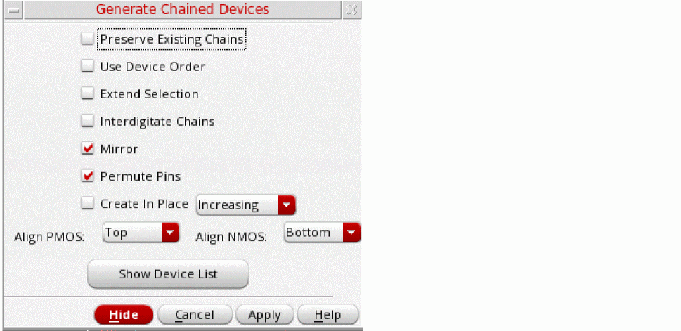 -
Set the options you require.
- To prevent existing chains from being broken during interactive chaining, select Preserve Existing Chains.
-
To maintain the relative starting positions of the selected devices in the generated chain, select Use Device Order.When Use Device Order is selected, dummy, unconnected, and part-connected devices are chained, where possible. The device nets are assigned to enable device abutment in the order defined by Use Device Order.
-
To enable the dummy instances to change their nets on both sides during interactive chaining to support abutment on both sides, set the chainDummyFlexBothEndNets environment variable to
true.
When Use Device Order is deselected, dummy and unconnected devices are not chained. These devices are placed down separately in the order: chains, dummies, and then unconnected devices. Part-connected devices are chained, where possible, with nets assigned to enable device abutment.
IfuseDeviceOrderis set tot, advanced node devices are chained even if their S/D pins are on different nets. In this case, the devices are abutted on dummy pins. -
To enable the dummy instances to change their nets on both sides during interactive chaining to support abutment on both sides, set the chainDummyFlexBothEndNets environment variable to
- To select entire chains with a single click, choose Extend Selection. Otherwise, each click selects an individual device, mfactored device, or folded leg.
- To identify nodes that qualify as pseudoparallel connections so that no current passes through the connecting nets, choose Interdigitate Chains.
- To mirror the instances in a chain, choose Mirror.
- To permute the instances in a chain, choose Permute.
- To create the device chains on layout canvas at the same location as the left-most instance selected for chaining, choose Create In Place. If at least one of the instances selected for chaining are on a row region, the chain is created at the same location as the left-most instance in the row region.
-
To define the alignment of p- or n-type devices, select an appropriate alignment using the Align PMOS or Align NMOS drop-down list. By default, the NMOS and PMOS alignment is controlled by the current value of the environment variables, lxChainAlignNMOS and lxChainAlignPMOS, respectively.
Note:
-
If only one of the devices to be abutted has a bulk, ensure that the chainUseDeviceOrder and chainAllowSingleBulk environment variables are set to
t. - If you are using a FinFET design, the alignment options will be displayed as Align PFIN and Align NFIN.
- In the layout canvas, select the devices you want to chain.
Alternatively, click the Show Device List button to see the list of devices available for chaining. The list box appears in the Generate Chained Devices form.
You can also select devices in the layout canvas before you start the command. In this case, the selected devices are highlighted in the form when it opens.
The selected devices are highlighted in the canvas. -
Click Apply and move the cursor into the layout canvas.
The selected transistors appear as an image of a transistor chain that follows the cursor.
If the majority of the selected devices are oriented vertically, the generated chain is also oriented vertically. -
Click the layout canvas where you want to place the chained transistors.
The transistors are placed where you click.
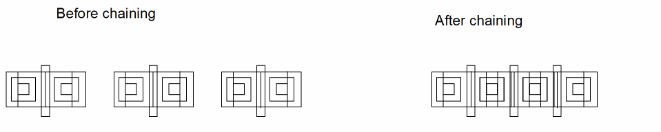You can also chain dummy instances interactively by using the procedure described above. If you select the Use Device Order check box, dummy devices are treated as regular devices during the chaining operation and can support abutment on one side or on both sides depending on the state of the chainDummyFlexBothEndNets environment variable. Dummy devices with floating S/D nets are also supported for interactive chaining. However, if Use Device Order is not selected, dummies are ignored during chaining. As a result, irrespective of their order, dummies are placed at the end of the chain and their original connectivity is retained.
Additional Information
- Chains that comprise only NMOS or only PMOS transistors are aligned with the bottom edge. If you use the Generate All From Source command to create a cluster comprising both an NMOS and a PMOS transistor, the PMOS is placed on top aligned to the lower edge, and the NMOS is placed below it aligned to the upper edge.
- Folded transistors are chained with the number of folds specified in the Generate Folded Devices form. For more information, see Folding a Transistor or FinFET Device.
Chaining Devices Using the Context Menu
To manually chain transistors using the instance context menu:
-
In the Navigator assistant, select the instances to be chained and then right-click to choose Chain – <Appropriate Align option> from the context menu.
The Chain command in the context menu chains the selected set with Use Device Order on and aligns the devices to default, top, center, or bottom depending on the alignment option selected from the context menu.
Chaining Devices with or without Contacts
Layout XL enables you to choose whether or not to keep contacts for each chain in the selected set. You can set the option to keep or drop contacts.
To control contacts in a selected chain of chains:
The selected chains have their contacts kept or deleted in the layout canvas, as appropriate.
Removing a Device from a Chain
To remove a device from a chain:
-
In the layout canvas, select the device you want to remove from a chain.The chainExtendSelection environment variable must be set to
nilto let you select an individual device in a chain. - Choose Edit – Move.
-
Click the layout canvas where you want to place the selected device.
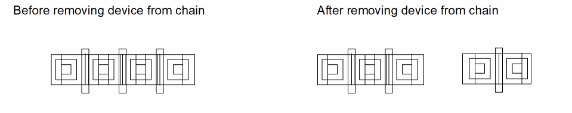
Chaining Devices when Generating Selected From Source
To chain devices automatically during the Generate Selected From Source command,
-
In the Generate Selected Components form, select the Group As In Schematic and Chain options.
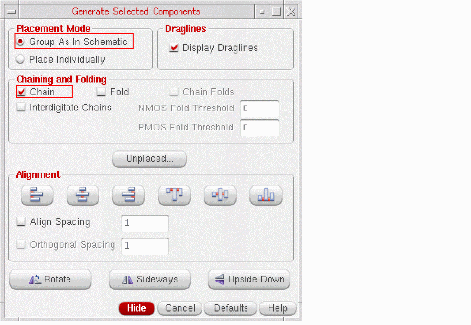The results generated by the chaining engine during this command are affected by the setting for the lxStackPartitionParameters environment variable.If you are using a FinFET design, the chaining and folding threshold fields are displayed as NFIN Fold Threshold and PFIN Fold Threshold, respectively, as shown in the figure below.
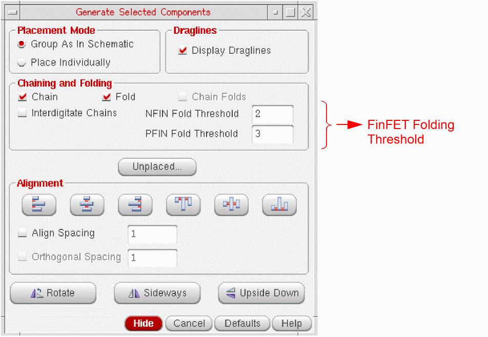
Layout XL cannot automatically chain devices in Place Individually mode. To do this,
-
Select the Connectivity Tab of the Connectivity form and choose Update connectivity information when design is modified.
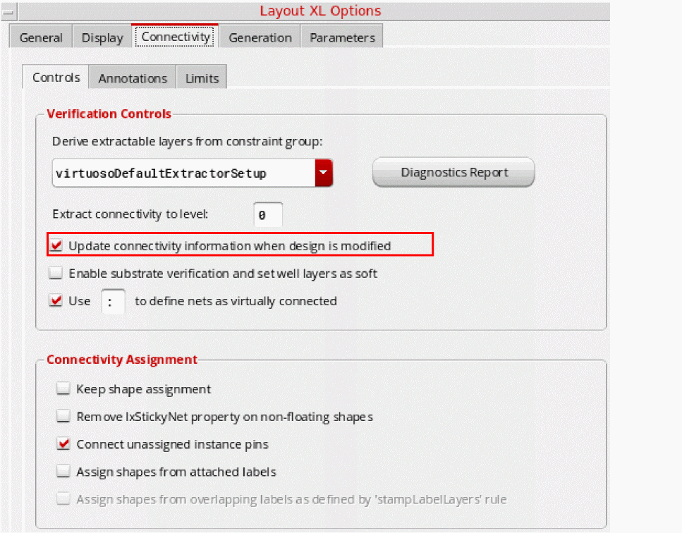 -
Click the Generation Tab and select Abut transistors.
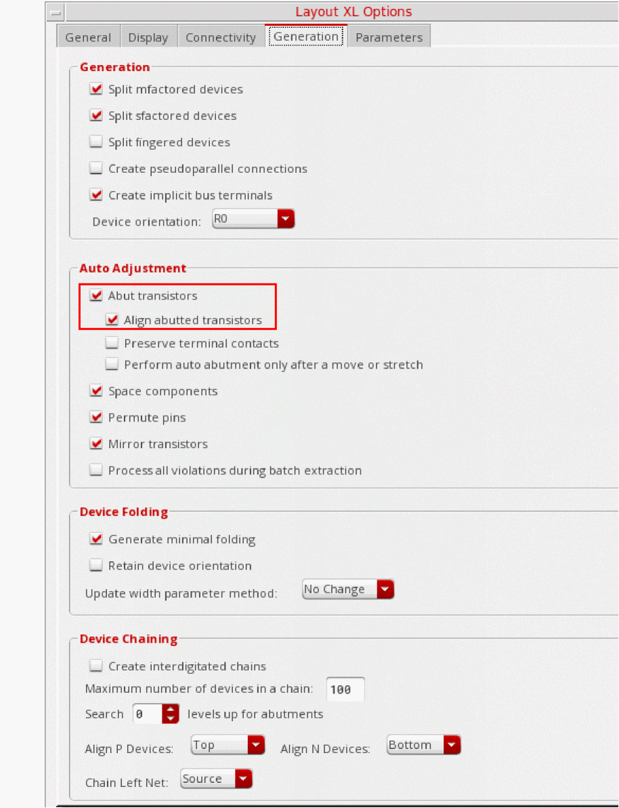 -
From the layout window menu bar, choose Generate Selected From Source.
The Generate Selected Components form appears. -
In the schematic, select the instances you want to place, then click in the layout where you want to place the first and second instances.
The software places the instances where you click in the same order that you selected them. -
Where the flight lines indicate that abutment is possible, place the devices so that the pins overlap.
The devices are chained automatically.
Moving Chained Transistors
To move chained devices while maintaining the chains,
-
From the layout window menu bar, choose Edit – Move.
The Move form is displayed. -
Select a chained device and choose the Chain Mode as All.
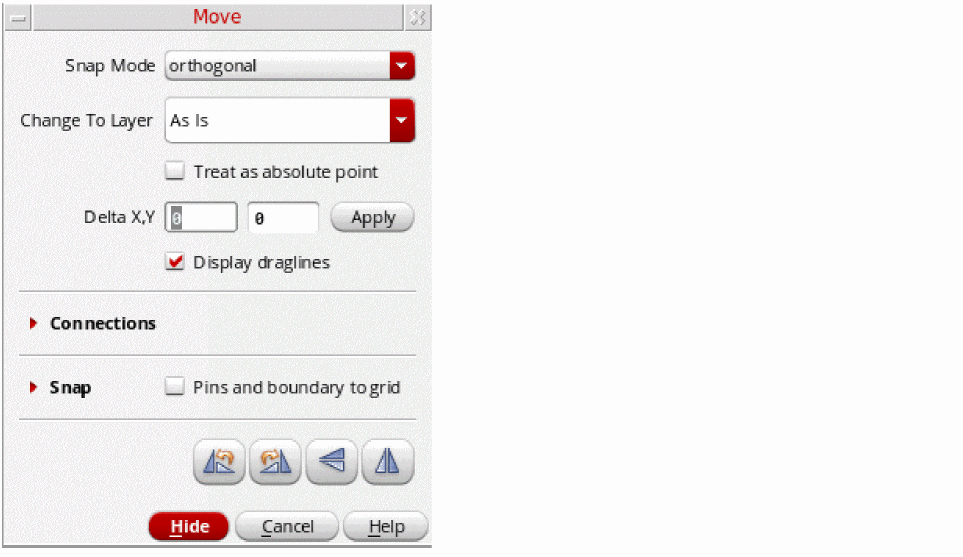 -
Click the reference point for the move.
All the devices in the chain are highlighted. - Click in the layout where you want to place the devices.
-
Change the Chain Mode option to Selected and click the selected device.
The selected device is moved and the device is no longer a part of the chain. - Select a device in the center of the chain and change the Chain Mode to Selected Plus Right.
-
Click the reference point for the move.
You see that all the devices to the right of the selected device remained chained as you move the devices. - Click in the layout where you want to place the devices.
Automatic Device Abutment
Use the following commands to automatically abut devices.
- Layout generation automatically abuts transistors when the Chain option is selected. For more information, see Chaining Transistors Automatically during Layout Generation.
- The Update Components And Nets command automatically abuts when the Chain option is selected. For more information, see Chaining Transistors Automatically when Updating Components and Nets.
Chaining Transistors Automatically during Layout Generation
To chain transistors automatically during layout generation,
-
From the layout window menu bar, choose Connectivity – Generate – All From Source.
The Generate Layout form is displayed. -
On the Generate tab, select either of the Chaining options:
-
To automatically chain the transistors, select the Chain check box and click OK.
The software chains the transistors automatically during layout generation. -
To automatically chain the individual folds of a transistor, select the Chain Folds check box and click OK.
The software automatically chains the individual folds of a transistor. The Chain Folds check box is active only when the Chain option is deselected and the Fold option is selected.The results of the Chaining operation are affected by the state of the lxStackPartitionParameters environment variable.
-
To automatically chain the transistors, select the Chain check box and click OK.
For more information on generating a layout, see Generating All Components from Source.
Chaining Transistors Automatically when Updating Components and Nets
To chain transistors automatically when updating components and nets,
-
From the layout window menu bar, choose Connectivity – Update – Components And Nets.
-
On the Generate tab, select either of the chaining options:
-
To automatically chain the transistors, select the Chain check box and click OK.
The software chains the transistors automatically during layout generation. -
To automatically chain the individual folds of a transistor, select the Chain Folds check box and click OK.
The software automatically chains the individual folds of a transistor. The Chain Folds check box is active only when the Chain option is deselected and the Fold option is selected.
-
To automatically chain the transistors, select the Chain check box and click OK.
For more information on this command, see Updating Components and Nets.
Debugging Abutment
The Debug Abutment plugin is available for cellviews with maskLayout view type and can be used in Layout XL to debug all abutment events.
To launch the plugin, choose Launch – Plugins – Debug Abutment from the layout window menu bar.
The Debug Abutment assistant is displayed.
You use this assistant to specify a set of events as break-points in a user-defined abutment function. The Event area lets you choose which event to debug.
- Pre-Process (Event 5)
- Adjust Parameters (Event 2)
- Calculate Spacing (Event 1)
- Unabutment (Event 3)
- Non Abutment (Event 4)
When a command triggers device abutment, the file containing the user abutment function is displayed in SKILL IDE. The device abutment flow pauses in the user-defined abutment function if the current event matches the events selected in the assistant and information on the pair of abutting devices is displayed in the Abutment event information area. You can then step through the abutment function using the SKILL IDE commands.
Using the Debug Assistant
This section describes how to use the Debug Abutment assistant to debug a user-defined abutment function.
-
Choose Launch – Plugins – Debug Abutment from the layout window menu bar.
The Debug Abutment assistant is displayed. -
Choose the abutment events you want to debug.
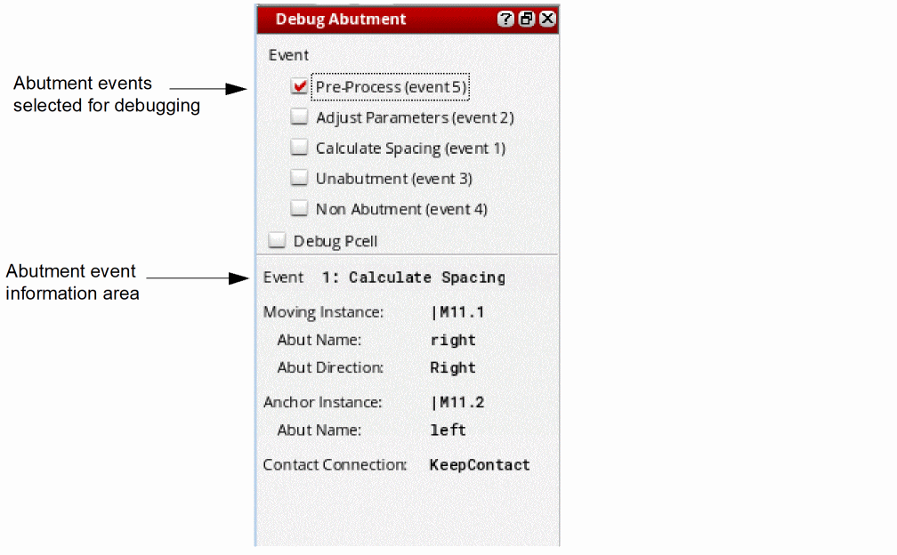When you abut two devices (or two chains), the device abutment information is displayed in the assistant and when one of the selected events is executed:- SKILL IDE is opened automatically and displays the user-defined abutment function.
- The device abutment flow pauses at the user-defined abutment function, giving you the opportunity to step through the abutment function to debug the specified event using SKILL IDE.
- When current event is finished, control is returned to the abutment engine.
If another selected event is executed, the debug abutment flow returns to step 2a. - Select the Debug Pcell check box to debug the Pcell evaluation that is triggered by the code block that modifies the Pcell parameter inside the Pcell abutment function.
- Repeat these steps until device abutment is finished.
Abutment of Dummy Shapes in Pcells
At advanced nodes, cells are placed close together and such proximity can lead to various interconnect and layout-dependent effects. So, abutment at advanced nodes needs to be driven by specific design rules that will ensure optimal device placement, yield, and performance. For information about the design rules that are applicable at advanced nodes, see
At advanced nodes, abutment of shapes in Pcell submasters, which are not attached to pins is supported. This is enabled by using
During incremental or full extraction, the connectivity extractor creates abutment violations for shapes inside Pcell submasters that have an abutment name, and are not pin figures. Because these shapes have no assigned connectivity at the top level, the extractor performs a shape chase to identify any such shapes at level 1 even when the default extraction depth is 0 and determines what connectivity should be assigned to each shape.
If the two overlapping shapes identified by the extractor are within Pcell submasters, which contain at least one shape each with an abutment name, then during abutment, the user-defined or PDK SKILL abutment function is called with a new event—Abutment Event 5. This new abutment event allows the abutment function to adjust the Pcell parameters and return a SKILL list containing a pair of shapes to be abutted. In the context of advanced node abutment, this new abutment event allows the abutment function to add or remove dummy shapes during abutment so that the shapes which initially overlapped to trigger the abutment can be totally different shapes (with different names) from the shapes that are finally abutted together.
For more information about the Pcell abutment capability supported by Virtuoso Layout Suite XL, see Abutment Event 5. For information about the generic device abutment in Virtuoso Layout XL, see Device Abutment.
Let us now look at some examples that depict Pcells with and without dummy shapes. To begin with, below is an example of a Pcell without a dummy shape inserted.
Before we see some examples of Pcells with dummy shapes added, it is useful to know that the dummy shapes in a Pcell can be controlled by using the Pcell parameters.
Let us now look at some examples of Pcells that have one or more dummy “poly” shapes added. Notice that in the figure below, the Pcell at the top has a single dummy poly finger added to the right and the Pcell at the bottom has two dummy poly fingers added on either side.
Now, let us look at some Pcells that have one or more dummy “poly” shapes and one or more “spaced” dummy “diffusion” shapes added.
In the figure below, the Pcell at the top has a single dummy poly shape and a dummy diffusion shape added. However, that the dummy diffusion shape is added at a distance from the transistor diffusion.
Now, let us look at some Pcell examples that have one or more dummy poly shapes and an adjacent dummy diffusion shape added. The dummy diffusion shape is placed immediately adjacent to the transistor poly or diffusion shape.
In the figure below, notice that the Pcell at the top has two dummy “poly” fingers and an adjacent dummy “diffusion” shape added. On the other hand, the Pcell at the bottom has two dummy “poly” shapes on either side and the dummy “diffusion” shape is adjacent to the transistor diffusion.
Prerequisites for Dummy Shape Abutment
Abutment of shapes in Pcell submasters can trigger due to overlap of two “named” abutment shapes that are not attached to pins, or due to the overlap of shapes that are attached to pins.
abutAccessDir, abutName, and abutFunction, defined. For more information, see Setting Up Pcell Dummy Shapes for Abutment.Setting Up Pcell Dummy Shapes for Abutment
To set up Pcell dummy shapes for abutment at advanced nodes, you must:
-
Use the dbSetFigAbutName SKILL function to set the
abutNameof each dummy shape. - Set up the same abutment properties as required for any other Pcell:
Abutment in Virtuoso Photonics Solution (ICADVM20.1 Photonics Only)
Virtuoso_Photonics_Option license to use the functionality discussed in this section. For information on obtaining the required license, contact your local Cadence representative.
When using the Virtuoso Photonics Solution with the Virtuoso_Photonics_Option license checked out, Layout XL enables abutment of Pcells. For photonic designs, this implies that Layout XL supports the abutment of optical waveguides.
If you set the t, Layout XL also supports the abutment of non-Pcell instances with Pcell instances and other non-Pcell instances. During non-Pcell abutment, top-level pins can abut with instance pins. By default, instance pins on the same pin layer are abutted and aligned at the center.
For photonic designs, waveguide abutment is also supported.
Abutment Function Flow
To enable the abutment of Pcell dummy shapes, Event 5 of the abutFunction flow gets precedence over all the other abutment events—Events 1 to 4 and Event 6. If both the overlapping Pcell pin figures or shapes support Event 5, the sequence in which the abutFunction calls these events is illustrated in the figure below.
-
If either of the overlapping Pcell instances does not support Event 5, the
abutFunctionstarts with Event 2. -
In the event that Pcell abutment fails or the dummy shapes are not considered abuttable, the
abutFunctioncalls the following events, though the order in which these events are called is not fixed. Event 4 is triggered to allow auto-spacing, when required. Event 6 is triggered only when the abutChainEvent environment variable is set totrue.
See Unabutment Flow for more information.
Abutment Event 5
In abutment Event 5, after the abutment engine creates the abutment group and adds the instances that have at least one named abutment shape, the parameters of each Pcell instance get updated, if required. The parameter update allows the dummy shapes that actually abut together to be different from the ones that initially overlapped to trigger the abutment. During the update, any undesired dummy shapes—poly or diffusion shapes—are removed.
Note:- Abutment groups are created as dbGroups by the Virtuoso abutment engine. Pcell abutment functions can use these abutment groups to store and retrieve state information through properties, provided the Pcell abutment functions do not add or remove objects to or from the abutment groups, or modify their existing properties or attributes. For more information about an abutment group and the attributes it supports, see the Virtuoso Design Environment SKILL Reference user guide.
- The abutment engine stores the names of the abuttable pin figures that are passed for abutment Event 5 (or for Abutment Event 2, as required). The stored figIDs are later used to trigger the re-abutment, if unabutment was triggered due to a parameter update of the Pcell instances. For more information, see Abutment Event 3.
Abutment Event 2
In Event 2, the abutment engine updates the Pcell abutment parameters on both the Pcell instances based on the connectivity and physical characteristics of the Pcells. This parameter update may result in creation of new masters, which can replace the old ones. For more information, see Computing Connection Condition for Abutment Event 2.
After being called with Event 2, if abutFunction returns t, the abutment engine calls the abutment function again, this time with Event 1. On the other hand, if abutFunction returns a value of nil, the Pcells are considered as unabuttable.
Computing Connection Condition for Abutment Event 2
After the parameter adjustment, the abutFunction returns the figIDs of the dummy shapes that are actually to be abutted. The returned shapes are used to compute the connection condition for Abutment Event 2 to determine if the connection contacts should be retained or removed during the abutment.
The shapes that can be returned by the abutment function and their contact condition for Event 2 are as given below:
-
Both figs are pinFigs connected to the same upper-level net
In this case, the connection condition—whether the connection contacts should be kept or dropped—is based on the connectivity of the net at the upper level. -
Both figs are pinFigs connected to different upper-level nets
In this case, because the upper-level net connectivity for both the shapes is different, the abutment is aborted to prevent a short. -
Only one fig is a pinFig connected to an upper-level net
In this case, the connection condition—whether the connection contacts should be kept or dropped—is based on the upper-level net to which the pinFig is connected. -
Neither fig is connected to an upper-level net
In this case, the abutment engine returns shapes that are not pinFigs, or returns pinFigs that do not have their terminals connected to instance terminals or nets at a higher level. To determine the connection contact condition for this case, Virtuoso Layout Suite XL supports the following environment variables:
Abutment Event 1
During the processing of Event 1, the abutment function calculates the spacing between two figs—pin figures or shapes—and returns the value. The use of abutNames takes precedence over the use of pin figure names to find the abuttable pin figures from the new master.
The abutment engine uses the abutment direction to determine how the instances should move so that the reference edges of the figures are properly spaced. If necessary, the perpendicular edges of the abuttable instances are aligned.
Note:-
If you have
abutTogethermode selected, which implies that the Virtuoso Layout XL environment variablemoveAsGroupis set totrue, the instances move as a group by the smallest distance of all the abutments. - By default, the abutment group ID is passed to abutment Event 1. You can use the group ID to store the Pcell properties or the Pcell state information at intermediate stages of abutment. You can also use the abutment group ID to retrieve the previously saved Pcell state information.
To prevent the abutment group ID to be passed to Event 1, set the lxAbutPassGroupIdToEvent1 environment variable to nil.
Notes on Alignment Support
-
Horizontal and Vertical abutment is supported, depending on the
accessDirof the abutting pinFigs. - Based on the value specified during Event1, abutting instances offset in x and y direction and determine the snapping mode.
The following data types can be returned during Event1:
- Number: Determines the total offset in the direction of abutment.
-
String: Determines the snapping mode to be one of (
dbcAbutSnapTop,dbcAbutSnapBottom,dbcAbutSnapMiddle,dbcAbutSnapLeft,dbcAbutSnapRight,dbcAbutSnapCenter) corresponding to the values provided (“top”, “bottom”, “middle”, “left”, “right”, “center”). -
List of two numbers (
x y): First number decides the total offset in the direction of abutment and the second number decides the perpendicular offset. -
List with one number and one string (
x“left”): First number decides the total offset in the direction of abutment and the string value decides the snapping offset to be applied.
The supported snapping modes (dbcAbutSnapTop, dbcAbutSnapBottom, dbcAbutSnapMiddle, dbcAbutSnapLeft, dbcAbutSnapRight, dbcAbutSnapCenter)are detailed below. These snapping modes are useful when devices are of different heights and widths.
-
Snapping modes (
dbcAbutSnapTop,dbcAbutSnapBottom,dbcAbutSnapMiddle) are useful for horizontal abutment. -
Snapping modes (
dbcAbutSnapLeft,dbcAbutSnapRight,dbcAbutSnapCenter) are useful for vertical abutment. -
dbcAbutSnapTop: Snaps the smaller device at the top edge of the bigger device. -
dbcAbutSnaBottom: Snaps the smaller device at the bottom edge of the bigger device. -
dbcAbutSnapMiddle: Snaps the smaller device in the middle of the bigger device inYdirection. -
dbcAbutSnapLeft: Snaps the smaller device at the left edge of the bigger device. -
dbcAbutSnapRight: Snaps the smaller device at the right edge of the bigger device. -
dbcAbutSnapCenter: Snaps the smaller device in the middle of the bigger device in theXdirection.
Abutment Event 6
Abutment Event 6 is the final event triggered for a chain when the abutChainEvent environment variable is set to true.
Abutment Event 6 is common to both the abutment and the unabutment flows. By default, the event is called at the end of an abutment (or an unabutment) flow. After abutment, the event gets triggered if the size of the chain is more than one. After unabutment, the event gets triggered if the size of the chain is equal to or more than one.
Abutment Event 6 is an optional event that, when triggered, enables you to modify the resultant chain after abutment (or unabutment). For example, the event could be called to finalize the Source-Drain connections for a chain by adding (or removing) the top-level figures. To enable this, a new optional argument, list of chain instances, is passed to the PDK SKILL abutment function, abutFunction.
procedure( AbutFunction (iA iB pA pB pinAside conn event @optional (group nil) (chain nil)))
The PDK abutment function needs to be modified to support the new optional argument. Between each top-level figure and an instance in the chain, the PDK abutment function establishes a parent-child relationship such that the instance in the chain is the parent and the top-level figure is the child.
Given below is an example that illustrates how the Abutment Event 6 can be used to modify a chain that is formed as a result of a recent abutment (or an unabutment) event.
For the Abutment Event 6 to be triggered, the abutChainEvent environment variable must be set to t:
envSetVal("layoutXL" "abutChainEvent" 'boolean t)
The Abutment Event 6 is triggered using an optional chain argument in the abutment function callback, as illustrated below.
procedure(abutFunc(instA instB figA figB accessDir conn event @optional (group nil) (chain nil))
prog( ()
case( event
( 1
return( myMosDoItEvent1(instA instB figA figB accessDir conn group))
)
( 2
return(myMosDoItEvent2(instA instB figA figB accessDir conn group))
)
( 3
return(myMosDoItEvent3(instA instB group))
)
( 4
return(myMosDoItEvent4(instA instB))
)
( 5
return(myMosDoItEvent5(instA instB figA figB accessDir conn group))
)
; event 6 for post-process whenever a chain is modified
( 6
return(myMosDoItEvent6(instA instB figA figB accessDir conn group chain))
)
)
return(t)
)
)
; Event 6 can be used for modifying completed chains, after abutment or unabutment, to finalize the S-D connections by adding or removing top-level figures.
procedure(myMosDoItEvent6(instA instB figA figB accessDir conn group chain)
let((objs (inst car(chain)) (propname "myEvent6PostProcPropName" ) )
; destroy user-added shapes
foreach(instId chain foreach(fig instId->children when(dbFindProp(fig propname) dbDeleteObject(fig))))
; execute event6 processes
let(( (postcb list( 'myCallBackReturnDBObjList ) ) )
foreach(funcobj postcb
when(getd(funcobj)
objs = apply(funcobj list(chain))
if(typep(objs) == 'list then
when(length(objs) > 0
foreach(obj objs
if(dbIsId(obj) then
when(inst~>figGroup dbAddFigToFigGroup(inst~>figGroup obj)) ; add user-shapes to parent figGroup
obj->parent = inst ; add parent-child relationship
dbReplaceProp(obj propname "string" symbolToString(funcobj))
else
warn("invalid dbobject returned by %L" funcobj)
)
)
)
else
; warn("%L returns value illegal; should return a list of dbobjects." funcobj)
)
);when
); foreach
);let
);let
)
procedure( myCallBackReturnDBObjList(chain)
let((figs)
; modifies completed chains to finalize the S-D connections by adding top-level figures, adjusting Pcell CDF parameters on chain instance figs, and returns a list of added instances
))
Related Topics
Unabutment Flow
For design situations where abutment is not possible, the abutFunction calls the abutment events in a sequence that lead to unabutment. This is the case when the Pcell abutment fails or the dummy shapes are not considered suitable for abutment.
Other than abutment Event 3 that causes the unabutment, other events that are likely to be called during an unabutment flow, include:
- Abutment Event 4
-
Abutment Event 6For abutment Event 6 to be triggered, the abutChainEvent must be set to true.
Abutment Event 3
Event 3 is called to perform unabutment, which can be triggered due to one of the following:
- A layout editor command, such as Move, which moves an abutted instance relative to another instance to which it is abutted. Or, due to a parameter update of the abutted Pcell instances using commands such as Update Layout Parameters, or during a manual parameter update of the Pcell instance using the Property Editor or a stretch handle.
-
The abutment engine needs to unabut a partially completed abutment that cannot proceed further. For example, if Event 2 returns
nilor the shapes returned by the event are pin figures on different nets.
In Event 3, the abutFunction retrieves the original parameter values that were stored by the function during Abutment Event 2 and Abutment Event 5. These values are then used to update the Pcell parameters to return the Pcell to its preabutment state.
If unabutment occurs due to the parameter update of Pcell instances, re-abutment is triggered immediately after the unabutment using the figIDs stored on the current abutment group. The abutment engine is now enhanced to store the figIDs that had triggered the abutment during Abutment Event 5 or Abutment Event 2, as required.
Having the figIDs of the originally abutted shapes available ensures that re-abutment can be performed using the same figIDs and in the same manner as the original abutment. Re-abutment is performed even if the abuttable shapes do not physically overlap after the parameter update.
To determine if explicit re-abutment will be triggered after unabutment, the PDK abutment SKILL Event 3 can call the Boolean SKILL function, dbAbutIsReAbutGroup. If the SKILL function returns true, the PDK SKILL function can store the relevant information, if needed, from the current abutment group. The stored information could be required later during re-abutment of the Pcell instances to achieve abutment with the same settings as before.
Abutment Event 4
In this event, the abutment engine verifies if the pin figures or shapes have a spacing property set. If the value of that property is set to abutFunction, the abutment engine executes Event 4 using the “Connect Always” condition. This allows adjusting the wells and guard rings for the non-abutted instances. The pin figures or shapes are moved based on the value returned by the spacing property. If the spacing property is not set, the instances are not moved.
Related Topics
Dummy Abutment Example
Let us now consider an example depicting abutment of dummy shapes. Here, D1 and S2, displayed in the figure below, are connected to a top-level net, netA, which has only two instance terminals.
The overlap of the two dummy poly shapes triggers abutment Event 5. This results in the parameters of the overlapping Pcell instances to be updated, causing removal of dummy poly on both the Pcell instances, as shown in the figure below.
After the dummies are removed, the abutment engine identifies that D1 and S2 are connected to the same upper-level net, netA. This enables the engine to compute the contact condition to be passed to the abutment Event 2.
In this case, since both the pinFigs are connected to the same upper-level net, the contact condition 1 is applicable, indicating that contacts need to be dropped. For more information about computing the abutment contact conditions, see Computing Connection Condition for Abutment Event 2.
During Event 2, the Pcell parameters are adjusted further. In this example, the further parameter adjustment results in removal of S2 from the second instance and dropping the connection contacts, as shown in the figure below.
Finally, the engine returns the alignment offset for aligning the abutted pinFigs in the direction of abutment. In this example, the alignment offset is 0, so the instances are abutted and aligned, as shown in the figure below.
Return to top